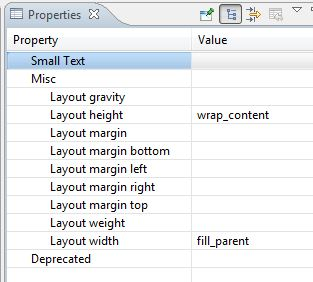
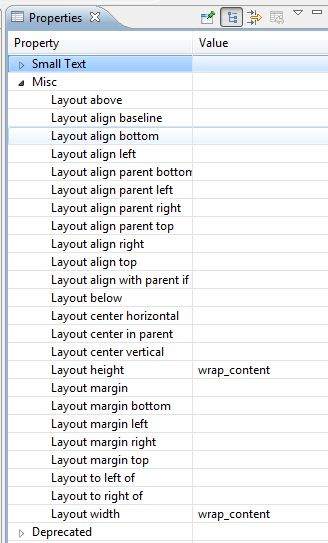
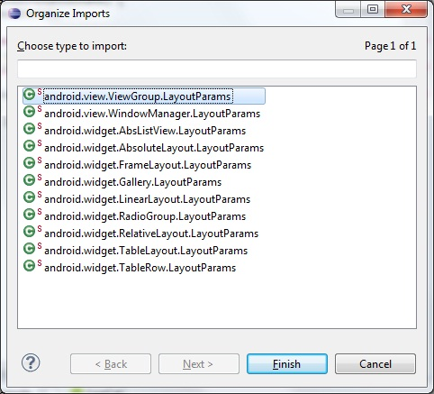
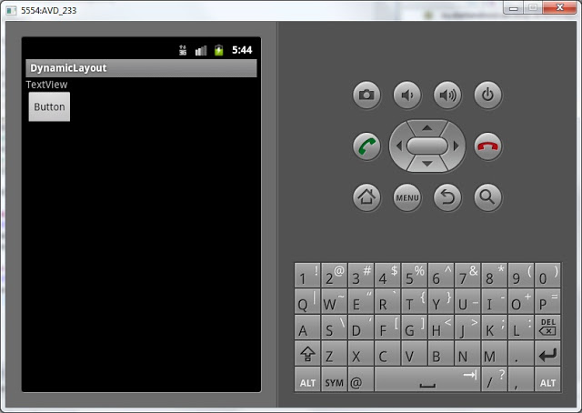
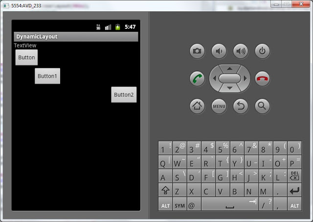

В этом уроке мы:
- рисуем экран программно, а не через layout-файл
До этого мы создавали экран с помощью layout-файлов. Но то же самое мы можем делать и программно.
Создадим проект:
Project name: P0161_DynamicLayout
Build Target: Android 4.0
Application name: DynamicLayout
Package name: ru.startandroid.develop.dinamiclayout
Create Activity: MainActivity
Открываем MainActivity.java и обратим внимание на строку:
setContentView(R.layout.main);Напомню, что в этой строке мы указываем, что Activity в качестве экрана будет использовать layout-файл main.xml. Есть другая реализация этого метода, которая на вход принимает не layout-файл, а View-элемент и делает его корневым. В layout-файлах корневой элемент обычно LinearLayout, мы тоже используем его.
@Override
public void onCreate(Bundle savedInstanceState) {
super.onCreate(savedInstanceState);
// создание LinearLayout
LinearLayout linLayout = new LinearLayout(this);
// установим вертикальную ориентацию
linLayout.setOrientation(LinearLayout.VERTICAL);
// создаем LayoutParams
LayoutParams linLayoutParam = new LayoutParams(LayoutParams.MATCH_PARENT, LayoutParams.MATCH_PARENT);
// устанавливаем linLayout как корневой элемент экрана
setContentView(linLayout, linLayoutParam);
}Обновим импорт – CTRL+SHIFT+O. Eclipse предложит нам выбрать, какой именно LayoutParams мы будем использовать. Тут надо остановиться подробнее. Вспомним теорию про экраны. Экран состоит из ViewGroup и вложенных в них View.

Известные нам примеры ViewGroup – это LinearLayout, TableLayout, RelativeLayout и т.д. Каждая из этих ViewGroup имеет вложенный класс LayoutParams. Базовым для этих LayoutParams является ViewGroup.LayoutParams.
ViewGroup.LayoutParams имеет всего два атрибута: height и width. Его подкласс ViewGroup.MarginLayoutParams наследует два этих атрибута и имеет свои четыре: bottomMargin, leftMargin, rightMargin, topMargin. Класс LinearLayout.LayoutParams в свою очередь является подклассом ViewGroup.MarginLayoutParams, наследует от него уже 6 аттрибутов и добавляет свои два: gravity и weight.
Т.е. объект LinearLayout имеет вложенный класс LinearLayout.LayoutParams с layout-аттрибутами. И эти аттрибуты распространяются на все дочерние View и ViewGroup.

Т.е. View, находящаяся в LinearLayout имеет один набор layout-параметров:

а View из RelativeLayout – другой:

Есть и общие элементы, т.к. родители у этих ViewGroup одни.
Вернемся в Eclipse, он ждет нашего выбора. Используем базовый класс ViewGroup.LayoutParams

Давайте разберем код. Мы создаем LinearLayout и ставим вертикальную ориентацию. Далее создаем LayoutParams. Конструктор на вход принимает два параметра: width и height. Мы оба ставим MATCH_PARENT. Далее вызывается метод setContentView. На вход ему подается LinearLayout и LayoutParams. Это означает, что корневым элементом Activity будет LinearLayout с layout-свойствами из LayoutParams.
Если мы сейчас запустим приложение, то ничего не увидим, т.к. LinearLayout – прозрачен. Давайте добавлять в LinearLayout View-компоненты.
LayoutParams lpView = new LayoutParams(LayoutParams.WRAP_CONTENT, LayoutParams.WRAP_CONTENT);
TextView tv = new TextView(this);
tv.setText("TextView");
tv.setLayoutParams(lpView);
linLayout.addView(tv);
Button btn = new Button(this);
btn.setText("Button");
linLayout.addView(btn, lpView);Мы снова создаем объект LayoutParams с атрибутами width = wrap_content и height = wrap_content. Теперь если мы присвоим этот объект какому-либо View, то это View будет иметь ширину и высоту по содержимому.
Далее мы создаем TextView, настраиваем его текст, присваиваем ему выше созданный LayoutParams и добавляем в LinearLayout с помощью метода addView (View child).
С Button аналогично – создаем, правим текст, а затем используем другую реализацию метода addView (View child, ViewGroup.LayoutParams params), которая одновременно добавляет Button в LinearLayout и присваивает для Button указанный LayoutParams. Результат будет тот же, что и с TextView, но вместо двух строк кода получилась одна.
Обратите внимание, что для двух объектов View я использовал один объект LayoutParams - lpView. Оба View-объекта считают параметры из LayoutParams и используют их.
Сохраним и запустим приложение. Видим, что компоненты на экране появились. И видно, что их высота и ширина определена по содержимому (wrap_content).

Объект lpView имеет базовый тип android.view.ViewGroup.LayoutParams. А значит позволит настроить только ширину и высоту. Но для View в LinearLayout доступны, например, отступ слева или выравнивание по правому краю. И если мы хотим их задействовать, значит надо использовать LinearLayout.LayoutParams:
LinearLayout.LayoutParams leftMarginParams = new LinearLayout.LayoutParams(
LayoutParams.WRAP_CONTENT, LayoutParams.WRAP_CONTENT);
leftMarginParams.leftMargin = 50;
Button btn1 = new Button(this);
btn1.setText("Button1");
linLayout.addView(btn1, leftMarginParams);Смотрим код. Мы создаем объект типа LinearLayout.LayoutParams с помощью такого же конструктора, как и для обычного LayoutParams, указывая width и height. Затем мы указываем отступ слева = 50. Отступ здесь указывается в пикселах. Далее схема та же: создаем объект, настраиваем текст и добавляем его в LinearLayout c присвоением LayoutParams.
Аналогично добавим компонент с выравниванием:
LinearLayout.LayoutParams rightGravityParams = new LinearLayout.LayoutParams(
LayoutParams.WRAP_CONTENT, LayoutParams.WRAP_CONTENT);
rightGravityParams.gravity = Gravity.RIGHT;
Button btn2 = new Button(this);
btn2.setText("Button2");
linLayout.addView(btn2, rightGravityParams);Сохраним и запустим. Button1 имеет отступ 50px. А Button2 выравнена по правому краю:

Вероятно, эта тема будет не очень понятна с первого раза. Поэтому на следующих двух уроках мы закрепим эти знания и попрактикуемся в добавлении элементов на экран и их настройке.
Полный код урока:
public class MainActivity extends Activity {
/** Called when the activity is first created. */
@Override
public void onCreate(Bundle savedInstanceState) {
super.onCreate(savedInstanceState);
// создание LinearLayout
LinearLayout linLayout = new LinearLayout(this);
// установим вертикальную ориентацию
linLayout.setOrientation(LinearLayout.VERTICAL);
// создаем LayoutParams
LayoutParams linLayoutParam = new LayoutParams(LayoutParams.MATCH_PARENT, LayoutParams.MATCH_PARENT);
// устанавливаем linLayout как корневой элемент экрана
setContentView(linLayout, linLayoutParam);
LayoutParams lpView = new LayoutParams(LayoutParams.WRAP_CONTENT, LayoutParams.WRAP_CONTENT);
TextView tv = new TextView(this);
tv.setText("TextView");
tv.setLayoutParams(lpView);
linLayout.addView(tv);
Button btn = new Button(this);
btn.setText("Button");
linLayout.addView(btn, lpView);
LinearLayout.LayoutParams leftMarginParams = new LinearLayout.LayoutParams(
LayoutParams.WRAP_CONTENT, LayoutParams.WRAP_CONTENT);
leftMarginParams.leftMargin = 50;
Button btn1 = new Button(this);
btn1.setText("Button1");
linLayout.addView(btn1, leftMarginParams);
LinearLayout.LayoutParams rightGravityParams = new LinearLayout.LayoutParams(
LayoutParams.WRAP_CONTENT, LayoutParams.WRAP_CONTENT);
rightGravityParams.gravity = Gravity.RIGHT;
Button btn2 = new Button(this);
btn2.setText("Button2");
linLayout.addView(btn2, rightGravityParams);
}
}